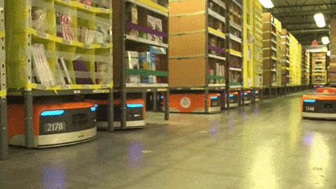
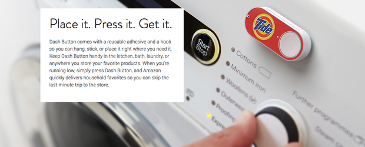

The Supply Chain Race
Originally published at https://singularityhacker.com/the-supply-chain-race

It’s not uncommon to hear people try to predict what the hot jobs of the future are going to be. Everything from machine learning to big data are put in this group, but one discipline that’s not mentioned is becoming increasingly important: supply chain engineering. It sounds boring, but it’s not. It’s the science of moving a thing from one place to another with the greatest speed and efficiency. Remember in the old cartoons when Wile E Coyote would put an order for a missile in the mailbox and a delivery truck would pull up and place the ordered item in the mailbox three seconds later? That’s the ultimate goal of this discipline. Let’s look at the big contenders in this race to own the supply chain.
Amazon wants to so dominate the supply chain so that you don’t even have to leave your house for groceries. That’s part of the reason it purchased Kiva Systems for $775 million in 2012. Kiva’s robots bring shelves of goods out of storage and carry them to employees for sorting.

This is also why Amazon announced the “Prime Air” drone delivery service. These moves are not random. They’re strategic. Amazon recently announced Dash buttons as well, which is an attempt to work the supply chain problem from the other direction. From the consumer back to the warehouse. You click a button, and the desired items show up on your doorstep. You didn’t even need to look at a computer screen.

Google, unwilling to be outmaneuvered, has thrown its hat in the ring with the purchase of Boston Dynamics in December of 2013 for an undisclosed price. Until google purchased them, they did military contracts, but Google ended that with rumors that they would be leveraging the tech for supply chain management. This is very interesting because one of the weak links in automating warehouses is the ‘picker’. A picker’s role is to move certain specified items from one bin to another. The bins are brought to the picker via robots, but the picker must be able to recognize items and possess the dexterity to move objects of unpredictable sizes. The job of picker has not been automatable up to this point. My suspicion is that this is one of the nuts that google is trying to crack with their Boston Dynamic acquisition because human-like dexterity is exactly the kind of capability in which Boston Dynamics has excelled.